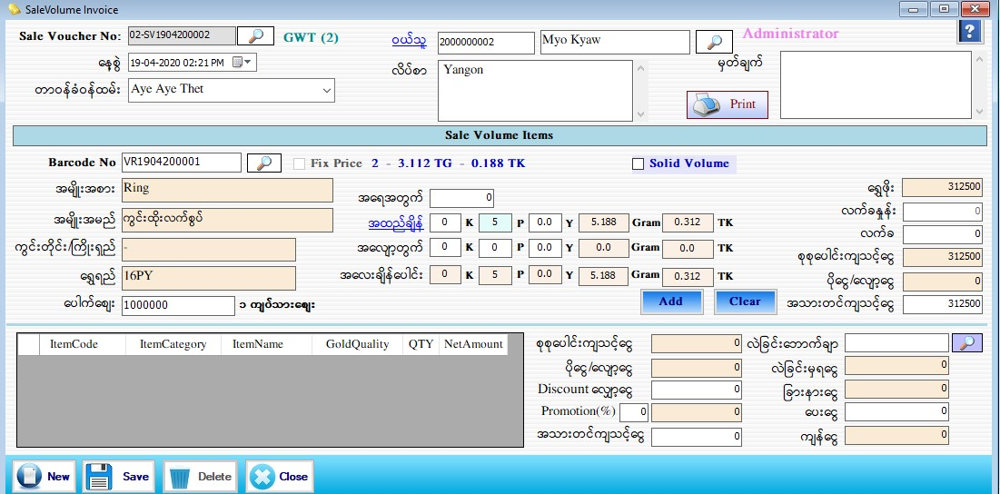

Sale Stock (Volume) Setup

- Sale Volume Stock သတ်မှတ်ရန်အတွက်Transaction အောက်မှ Sale Stock(Volume) Form ကို ဖွင့်ပါ။
- Sale Voucher No. ကို Software မှ Auto တပ်ပေးပါမည်။ နေ့ စွဲတွင် လက်ရှိရောက်နေသော Date ကိုပြပေးမည် ဖြစ်သည်။
- တာဝန်ခံ ဝန်ထမ်းကို ရွေးချယ်ပါ။ ဝယ်သူ၏ code နံပါတ်ကိုအလွတ်သိပါကရိုက်ထည့်လျှင် ဝယ်သူအမည်နှင့် လိပ်စာကျလာပါမည်။နံပါတ်ကို အလွတ်မသိရှိပါက ဝယ်သူဘေးတွင်ရှိသောမှန်ဘီလူးကိုနှိပ်ပြီး ရွေးချယ်ရပါမည်။
- ဘားကုတ်နံပါတ်ကို Barcode Scanner ဖြင့်လဲဖတ်နိုင်ပါသည်။ သို့မဟုတ် Barcode No ဘေးတွင် ရှိသော မှန်ဘီလူး button ကိုနှိပ်၍ ရောင်းချမည့် Barcode ကိုရွေးချယ်နိုင်ပါသည်။
- Barcode ကိုရွေးချယ်လိုက်သည်နှင့် တပြိုင်နက် Stock Setup Form တွင် သတ်မှတ်ခဲ့သည့် အတိုင်း ကွင်းတိုင်းကြိုးရှည်၊ အမျိုးအစား၊ အမျိုးအမည်၊ အထည်ချိန်၊ အလျှော့တွက်၊ အလေးချိန်ပေါင်း ၊ ရွှေအတင်အလေးချိန်၊ ကျောက်အလေးချိန်၊ အဖြူမှုတ်ခ၊ အရောင်တင်ခ၊ စိန်တပ်ခ၊ လက်ခ၊ ရွှေဈေး၊ ကျောက်ဖိုး၊ စုစုပေါင်းကျသင့်ငွေ၊ ပိုငွေလျှော့ငွေ တို့ကိုပြပေးနေလိမ့်မည်။ ပေါက်ဈေးတွင် ရွှေရည်ပေါ်မူတည်ပြီး နောက်ဆုံးနေ့ရက်အချိန်၏ဈေးကျနေပါမည်။
- အထည်ချိန်ကိုလဲပြန်လည်ချိန်ချင်ပါက အထည်ချိန် ကိုနှိပ်ပြီးပြန်ချိန်နိုင်ပါသည်။ အလျှော့တွက်ကို ပြန်လည် ပြင်ဆင်လိုပါက ပြင်ဆင်နိုင်ပါသည်။
- Solid Volume Item ကို ရောင်းလိုပါက Solid Volume Check Box ကို on ပြီး Stock Set Up(Solid Volume Items) အဖြစ် သတ်မှတ်ခဲ့သော အထည်များကို ရွေးပြီး ရောင်းချလိုသော အလေးချိန်ကို စက်ချိန်တင်ပြီး ရောင်းချနိုင်ပါမည်။
- ထို့နောက် Add Button နှိပ်၍ Data များဖြည့်သွင်းပါ။ Add လုပ်ပြီးသား ပစ္စည်းတစ်ခုအား ပြန်လည်ပြင်ဆင် လိုပါက အောက်မှ Grid မှ မိမိပြင်ဆင်လိုသော Row ၏ ရှေ့ဆုံးကိုနှိပ်ပါက သက်ဆိုင်ရာ Row ၏ Data များကို အပေါ်တွင် ပြန်လည်ပြင်ဆင်နိုင် မည်ဖြစ်သည်။ ပြီးနောက် Update Button အားနှိပ်ပါ။
- အသားတင်ကျသင့်ငွေ၊ Discount လျှော့ငွေ၊ ပေးငွေတွင် ဖြည့်စွက်ပါ။ စုစုပေါင်းကျသင့်ငွေ၊ ပိုငွေ-လျှော့ငွေ၊ ကျန်ငွေ တို့တွင် Software မှ Auto ကျပေးမည်။
- Promotion ပေးလိုပါက Promotion (%) ဘေးရှိ TextBox တွင် Promotion ပေးမည့် % ကိုရိုက်ထည့်လိုက်ပါက Promotion ပေးသောတန်ဖိုးသည် Auto ပေါ်လာပါမည်။ထို (%) သည် အသားတင် ကျသင့်ငွေပေါ်မူတည်ပြီးတွက်ခြင်းဖြစ်ပါသည်။
- လဲခြင်းဘောက်ချာဘေးတွင် ပါရှိသောမှန်ဘီလူးကိုနှိပ်ပါက ဝယ်ခြင်း Form တွင်လဲခြင်း ပြုလုပ်မည်ဟု ရွေးထားသော ဘောက်ချာများကျလာပါမည်။ထိုထဲမှ ဝယ်သူကအလဲပြုလုပ်မည့်ဘောက်ချာကိုရွေးလိုက်လျှင် ဝယ်သူ လဲခြင်းမှရငွေနှင့်အသားတင်ကျသင့်ငွေတို့ကိုခြားနားထားသော ငွေပမာဏကို ခြားနားငွေတွင် တွေ့မြင်နိုင်ပါသည်။
- Data များဖြည့်စွက်ပြီးပါက Save Button ကိုနှိပ်၍ သိမ်းဆည်းနိုင်ပါသည်။ Save Button ကိုနှိပ်ပြီးပါက Message box တစ်ခုတက်လာပါမည်။ Voucher ကိုတစ်ခါတည်းထုတ်မလားဟုမေးခြင်းဖြစ်ပါသည်။ OK ဟုနှိပ်လိုက်ပါက Voucher တစ်ခါတည်း ထွက်လာပါမည်။ Cancel ကိုနှိပ်လိုက်ပါက Data များကိုပဲ သိမ်းဆည်းသွားပါမည်။
- သိမ်းဆည်းပြီးသား Data များအား ပြန်လည်ကြည့်ခြင်း၊ ပြင်ဆင်ခြင်းများပြုလုပ်ချင်ပါက Sale Voucher No ၏ ဘေးတွင် ရှိသော မှန်ဘီလူး button ကိုနှိပ်ပြီးပြန်လည်ကြည့်ရှုပြင်ဆင်ချင်သော Sale Item အား ရွေးချယ် ပြီးပြင်နိုင် ပါသည်။
- သိမ်းဆည်းပြီးသား ထည့်ပြီးသား Data များကို ဖျက်လိုလျှင် Sale Voucher No ဘေးတွင် ရှိသော မှန်ဘီလူး button အားနှိပ်ပြီး ရှာပါ။ ထို့နောက် မိမိဖျက်လိုသော Data ကို Delete Button ကိုနှိပ်၍ ဖျက်နိုင်ပါသည်။
- Sale Volume Item အသစ်ထည့်လိုပါက New Button ကိုနှိပ်ပြီး အသစ်ထည့်နိုင်ပါသည်။
- Sale Stock(Volume) Form အား အသုံးပြုပြီးပါက Close Button ကိုနှိပ်၍ ပိတ်နိုင်ပါသည်။
- သိမ်းဆည်းပြီးသား ထည့်ပြီးသား Data များကို ဖျက်လိုလျှင် Sale Voucher No ဘေးတွင် ရှိသော မှန်ဘီလူး button အားနှိပ်ပြီး ရှာပါ။ ထို့နောက် မိမိဖျက်လိုသော Data ကို Delete Button ကိုနှိပ်၍ ဖျက်နိုင်ပါသည်။